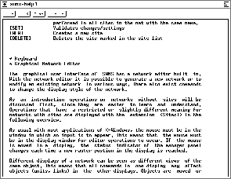

An arbitrary number of help windows may be opened, each displaying a different part of the text. For a display of context sensitive help about the editor commands, the mouse must be in a display and the key must be pressed. Then the last open help window appears with a short description.

A special feature is the possibility of searching a given string in the help text. For this, the search string is selected in the text window (e.g. by a double click).
 : After clicking this button, SNNS looks for the
first appearance of the marked string, starting at the position last
visited by a call to the help function. If the text was scrolled
afterwards, this position might not be on the display anymore.
: After clicking this button, SNNS looks for the
first appearance of the marked string, starting at the position last
visited by a call to the help function. If the text was scrolled
afterwards, this position might not be on the display anymore.
Note: All help calls look for the first appearance of a certain
string. These strings start with the sequence ASTERISK-BLANK (*
), to assure the discovery of the appropriate text position. With
this knowledge it is easy to modify the file help.hdoc to adapt
it to special demands, like storing information about unit types or
patterns. The best approach would be to list all relevant keywords at
the end of the file under the headline `` * TOPICS'', so that the
user can select this directory by a click to  .
.